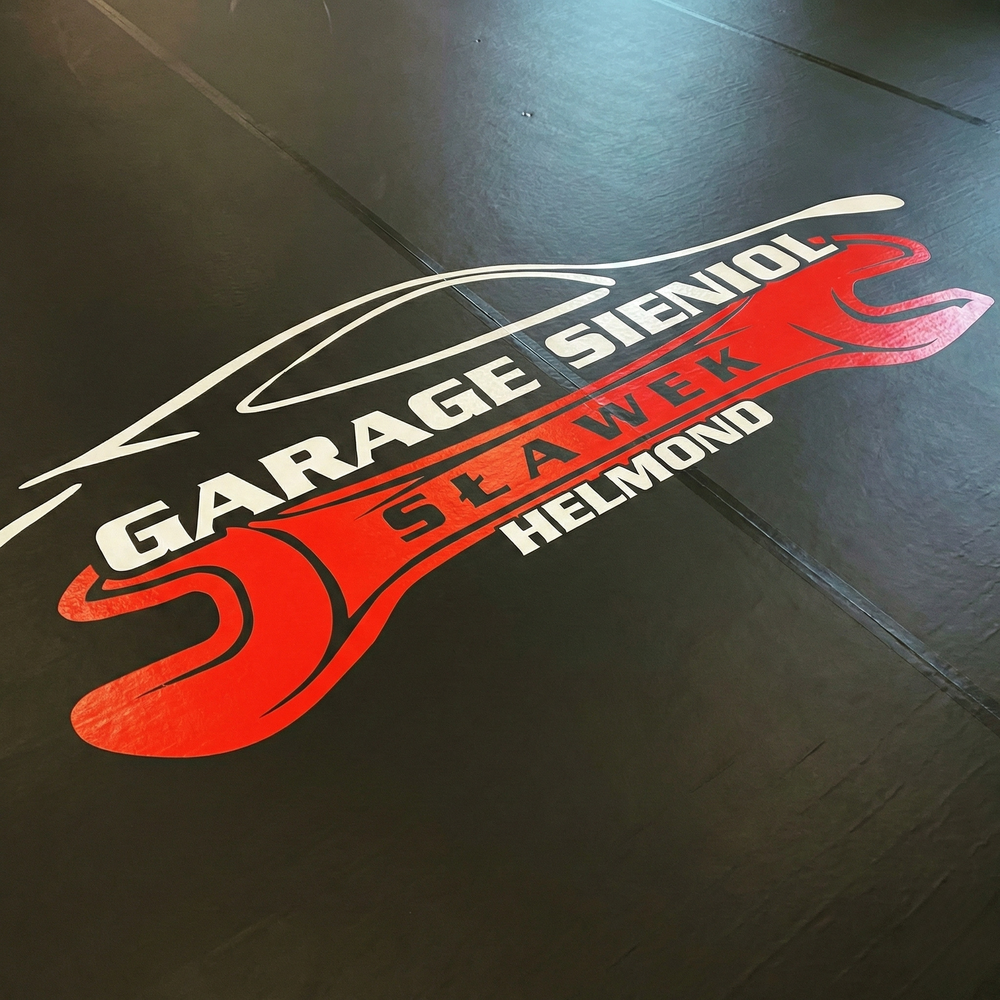
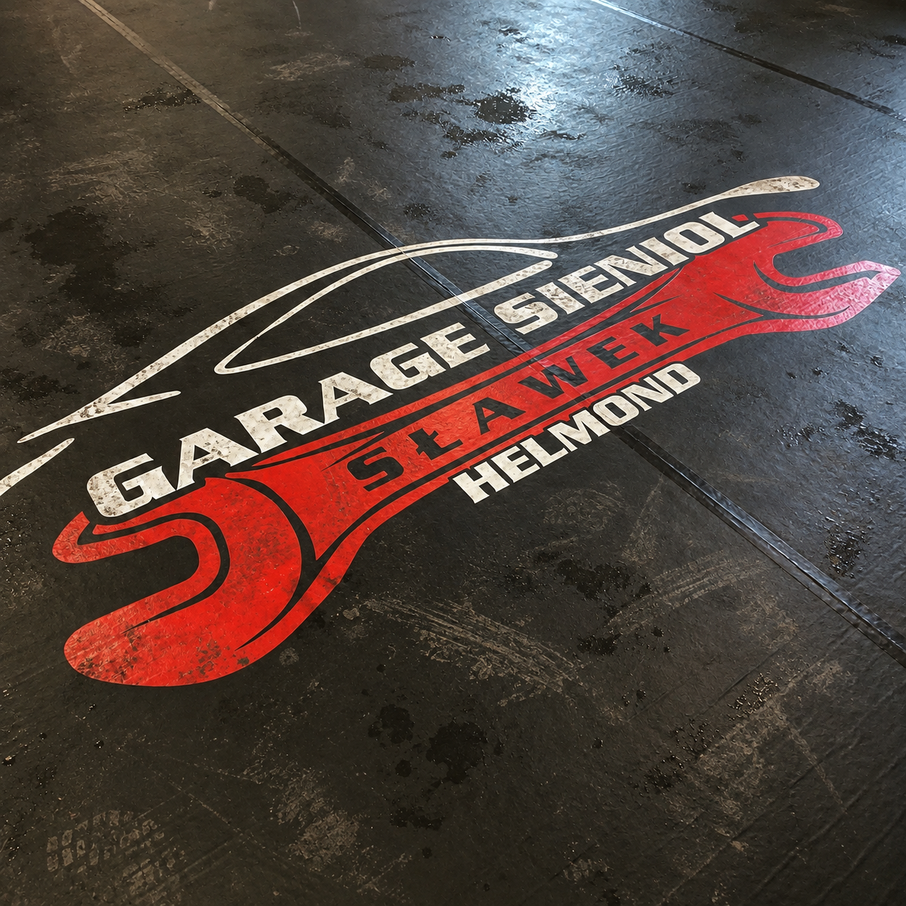

Haal het beste uit uw spanvloer met de juiste dosering en methode.
Meer product betekent niet automatisch een beter resultaat. Met de juiste dosering werkt Miral efficiënt en voorkomt u onnodig productgebruik. Kies de dosering die past bij de mate van vervuiling.
Normale vervuiling
15 ml per toepassing
Geschikt voor regelmatig onderhoud, lichte aanslag en dagelijkse vervuiling. Ideaal voor oppervlakken die regelmatig worden schoongemaakt.
Gebruik: aanbrengen volgens de productinstructies, kort laten inwerken en vervolgens reinigen of afnemen.
Hevige vervuiling
25 ml per toepassing
Voor duidelijke aanslag, vet, vuilophoping of oppervlakken die langere tijd niet zijn gereinigd.
Gebruik: gelijkmatig aanbrengen, volgens de aangegeven tijd laten inwerken en daarna grondig reinigen.
Extreme vervuiling
40 ml per toepassing
Voor zeer hardnekkige vervuiling waarbij een normale behandeling onvoldoende resultaat geeft. Uitsluitend gebruiken wanneer oppervlak en productinstructies dit toestaan.
Tip: behandel een oppervlak liever twee keer op normale dosering dan één keer op een veel hogere concentratie.
Iedere Miral-fles bevat 1.000 ml product. De daadwerkelijke hoeveelheid toepassingen is afhankelijk van het oppervlak, de vervuiling en de aanbevolen dosering.
Normaal gebruik
1.000 ml ÷ 15 ml
circa 66 toepassingen
Hevige vervuiling
1.000 ml ÷ 25 ml
circa 40 toepassingen
Extreme vervuiling
1.000 ml ÷ 40 ml
circa 25 toepassingen
Gebruik wat nodig is. Laat Miral de rest doen.


Voor NaMeng een dopje met een emmer lauwwarm water. Gebruik een klamvochtige, zachte dweil. Nooit schuursponzen of agressieve borstels gebruiken.
Nee, bij de juiste dosering droogt Miral gegarandeerd streeploos op. Een te hoge dosering is de nummer één oorzaak van strepen.
Ja, de Dieptereiniger is zeer effectief tegen rubberstrepen. Doe voor hardnekkige strepen wat product onverdund op een zachte doek.